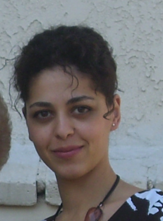

CSCSU is an annual conference dedicated to computer science research by CSU undergraduates. The purpose of the conference is to provide a venue in which talented CSU computer science undergrads can publish their work (under peer review), meet other CSU CS research students, and prepare for grad school.
Steering Committee, Computer Science Conference for CSU Undergraduates |
|
Glenn Bruns
Asst. Professor, Computer Science, CSU Monterey Bay
gbruns@csumb.edu
|
|
Kyle Dewey
Asst. Professor, Computer Science, CSU Northridge
kyle.dewey@csun.edu
|
|  |
Katya Mkrtchyan
Asst. Professor, Computer Science, CSU Northridge
katya.mkrtchyan@csun.edu
|
|